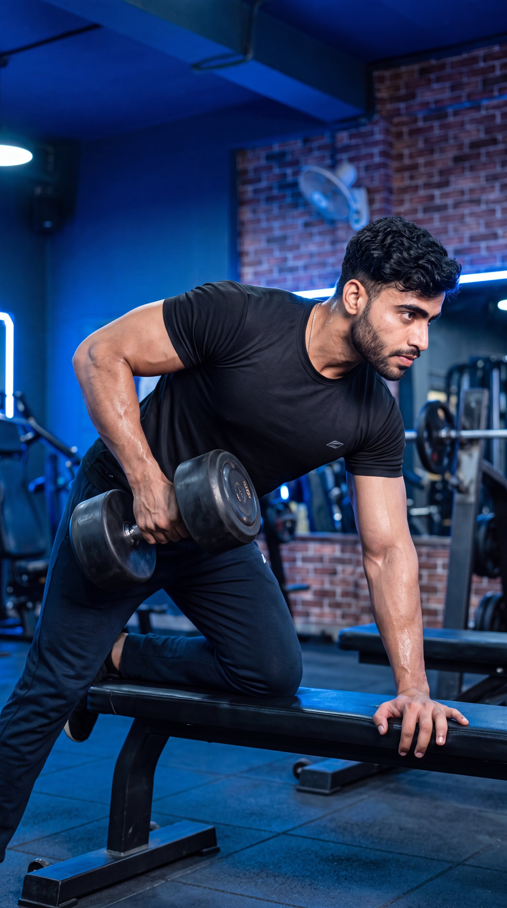

Primary Muscle
Latissimus Dorsi
Build Back Strength, Improve Muscular Balance & Master Unilateral Rowing Technique
The One-Arm Dumbbell Row is a compound unilateral exercise that primarily targets the latissimus dorsi while also engaging the rhomboids, trapezius, rear deltoids, biceps, and forearms. By training one side of the back at a time, it helps develop back thickness, unilateral pulling strength, muscular control, and balanced upper-body development.

Latissimus Dorsi
Dumbbell & Bench
Beginner
Compound
Understand which muscles do most of the work during the One-Arm Dumbbell Row and which supporting muscles help pull, stabilize, and control the movement throughout each repetition.
Lats
Middle Back
Upper and Middle Back
Front of Upper Arm
Discover how the One-Arm Dumbbell Row helps develop back thickness, increase unilateral pulling strength, improve muscular balance, and build greater control through a powerful single-arm rowing movement.
Trains the latissimus dorsi, rhomboids, and trapezius through a controlled horizontal pulling motion, helping develop muscular strength and thickness across the middle and upper back.
Trains one side of the back at a time, helping develop independent pulling strength and allowing each arm to work through the rowing movement without assistance from the opposite side.
As a compound unilateral exercise, the One-Arm Dumbbell Row recruits the lats, rhomboids, trapezius, rear shoulders, biceps, and forearms through one coordinated pulling movement.
Training each side independently makes it easier to give equal attention to both sides of the back and may help identify strength differences that can be addressed through consistent unilateral training.
Supporting the body with one hand and knee on a bench can help create a stable position, allowing greater focus on driving the working elbow backward and controlling the back muscles throughout each repetition.
Dumbbell loading can be increased gradually as your strength and technique improve, providing a clear progression path for continued back development, stronger unilateral pulling performance, and greater movement control.
Follow these step-by-step instructions to perform the One-Arm Dumbbell Row with proper bench setup, stable body positioning, controlled technique, and effective back engagement.
Select a manageable dumbbell and position it beside a flat bench. Place one knee and the same-side hand securely on the bench while keeping your opposite foot firmly planted on the floor.
Set up in a balanced position that allows you to keep your torso stable and your hips controlled. Avoid placing your supporting hand or knee too close together if it makes you feel unstable.
Hold the dumbbell firmly with your working hand using a neutral grip, with your palm facing inward. Allow your working arm to extend naturally beneath your shoulder while keeping control of the weight.
Keep your wrist in a comfortable neutral position and avoid excessively squeezing or bending it. Your hand should secure the dumbbell while your back muscles perform most of the pulling work.
Brace your core, maintain a neutral spine, and keep your torso stable with your hips approximately level. Allow the dumbbell to hang beneath your shoulder with your working arm extended before beginning the row.
Avoid excessively rounding your lower back or rotating your torso toward the floor. Establish a strong, comfortable position that you can maintain throughout the entire set.
Drive your working elbow backward as you pull the dumbbell toward your hip or lower rib area. Keep the dumbbell relatively close to your body and maintain a stable torso while allowing your shoulder blade to move naturally through the rowing motion.
Think about driving your elbow back toward your hip rather than simply lifting the dumbbell with your arm. Avoid excessive torso rotation or jerking the weight upward with momentum.
Slowly extend your working arm and lower the dumbbell back toward the starting position while maintaining a stable torso, neutral spine, and controlled hip position. Allow your shoulder blade to move naturally as your back muscles reach a comfortable stretch.
Do not let the dumbbell drop rapidly or allow your torso to twist as the weight lowers. Control the entire return phase, complete your repetitions on one side, and then repeat with the opposite arm.
Avoid these common technique errors to improve back engagement, maintain stable body positioning, and perform the One-Arm Dumbbell Row more effectively.
Selecting a dumbbell that is too heavy can make it difficult to maintain a stable torso, control the dumbbell path, and perform a consistent rowing motion throughout each repetition.
Choose a manageable dumbbell that allows you to maintain a neutral spine, stable torso, controlled elbow path, and smooth movement through both the pulling and lowering phases.
Excessively twisting your torso as you pull the dumbbell can reduce body stability, change the intended rowing pattern, and make it harder to maintain controlled tension on the working back muscles.
Brace your core and keep your hips and torso mostly stable as you drive your working elbow backward. Avoid opening your chest excessively toward the ceiling to lift the dumbbell higher.
Allowing the lower back to round excessively can reduce torso stability and make it harder to maintain a strong, controlled position throughout the unilateral rowing movement.
Brace your core, maintain a comfortable neutral spine, and use your supporting hand and knee to establish a stable position throughout both the pulling and lowering phases.
Jerking the dumbbell upward, rapidly twisting the torso, or using momentum to move the weight can reduce movement control and make it harder to maintain consistent tension on the intended back muscles.
Maintain stable body positioning and perform each repetition with a smooth elbow drive and controlled lowering phase. Reduce the weight if you need excessive momentum to complete the movement.
Apply these practical coaching cues to improve your One-Arm Dumbbell Row technique, increase back engagement, maintain stable body positioning, and perform each repetition with greater control and consistency.
Focus on driving your working elbow backward toward your hip as you row the dumbbell rather than simply lifting the weight upward with your hand and arm.
Think about leading the movement with your elbow while keeping the dumbbell relatively close to your body. This cue can help you focus on the working lat throughout the pulling phase.
Brace your core, maintain a neutral spine, and keep your hips and torso mostly stable throughout each repetition instead of twisting your body to lift the dumbbell higher.
Your working arm and shoulder blade should perform the rowing motion while your supporting hand, knee, and planted foot create a strong, balanced base. Avoid excessive torso rotation or opening your chest toward the ceiling.
Lower the dumbbell gradually as your working arm extends, maintaining control of the weight while allowing your shoulder blade to move naturally and your back muscles to reach a comfortable stretched position.
Do not let the dumbbell drop rapidly toward the floor. Keep the lowering phase smooth and controlled while maintaining your neutral spine, stable torso, and balanced bench-supported position.
Increase the dumbbell load only when you can maintain a stable torso, neutral spine, controlled elbow path, comfortable range of motion, and smooth repetitions from start to finish.
Heavier weight should not require excessive torso rotation, shortened repetitions, jerking the dumbbell upward, or losing your stable bench-supported position. Progress gradually while keeping every repetition controlled and consistent.
Progress from learning the One-Arm Dumbbell Row with a manageable load to stronger, more challenging variations while maintaining stable body positioning, a neutral spine, controlled dumbbell path, effective back engagement, and consistent technique.
Start with a dumbbell that allows you to learn proper bench setup, supporting hand and knee placement, neutral grip, torso alignment, elbow path, and controlled unilateral rowing technique without relying on excessive momentum.
Balanced bench setup, secure support points, comfortable neutral grip, neutral spine, stable torso, controlled dumbbell path, and smooth repetitions.
Develop consistent repetitions by maintaining a stable torso, driving your working elbow backward toward your hip, rowing the dumbbell through a comfortable range of motion, and controlling the lowering phase until your arm returns to a naturally extended position.
Stable torso positioning, effective elbow drive, controlled pulling phase, smooth lowering phase, comfortable stretch, and repetitions without excessive rotation, swinging, or jerking.
Once you can perform consistent One-Arm Dumbbell Row repetitions with reliable technique, gradually increase the load while preserving your neutral spine, stable torso, controlled elbow path, comfortable range of motion, and overall movement quality on both sides.
Progressive load increases, balanced development between both sides, consistent technique, controlled tempo, strong back engagement, and maintaining stable body positioning as fatigue develops.
After mastering the standard bench-supported One-Arm Dumbbell Row, explore controlled tempo variations, paused repetitions, standing supported rows, and other appropriate unilateral rowing variations to introduce new challenges according to your training goals and experience.
Intentional exercise variation, appropriate dumbbell selection, controlled technique, consistent range of motion, stable body positioning, and choosing variations that match your individual goals and experience.
Find clear answers to common questions about One-Arm Dumbbell Row technique, muscles worked, grip position, dumbbell path, torso stability, training volume, and exercise progression.
The One-Arm Dumbbell Row primarily targets the latissimus dorsi while also training the rhomboids, middle trapezius, rear deltoids, and teres major. The biceps brachii and forearms assist the pulling movement, while the core and surrounding stabilizers help maintain controlled body positioning throughout each repetition.
A neutral grip, with your palm facing inward toward your body, is commonly used for the standard One-Arm Dumbbell Row. Keep your wrist in a comfortable neutral position and hold the dumbbell securely without allowing excessive wrist bending during the pulling or lowering phases.
For the standard One-Arm Dumbbell Row, pull the dumbbell toward your hip or lower rib area while driving your working elbow backward and keeping the weight relatively close to your body. The exact finishing position may vary slightly depending on your anatomy, arm length, bench setup, and intended rowing technique.
For a standard bench-supported One-Arm Dumbbell Row, keep your torso and hips mostly stable while allowing your shoulder blade to move naturally through the rowing motion. Avoid excessive torso rotation or opening your chest toward the ceiling simply to lift the dumbbell higher or move more weight.
Yes. The One-Arm Dumbbell Row can be suitable for many beginners because the bench-supported setup provides a stable base and allows each side of the back to be trained independently. Beginners should start with a manageable dumbbell and focus on proper bench setup, a neutral spine, stable torso positioning, controlled elbow drive, and smooth repetitions before increasing the load.
The appropriate number of sets and repetitions depends on your training experience, goals, recovery, and overall program. For general muscle development, a common starting point is approximately 2–4 working sets of 8–15 controlled repetitions per side using a load that allows you to maintain a neutral spine, stable torso, controlled dumbbell path, comfortable range of motion, and consistent technique throughout each set.
Explore other back exercises that complement the One-Arm Dumbbell Row and help you develop horizontal pulling strength, back thickness, upper-back control, and balanced muscular development through different movement patterns and resistance methods.


Continue building your back strength and training knowledge with step-by-step exercise guides covering proper technique, muscles worked, common mistakes, coaching tips, and progression strategies.